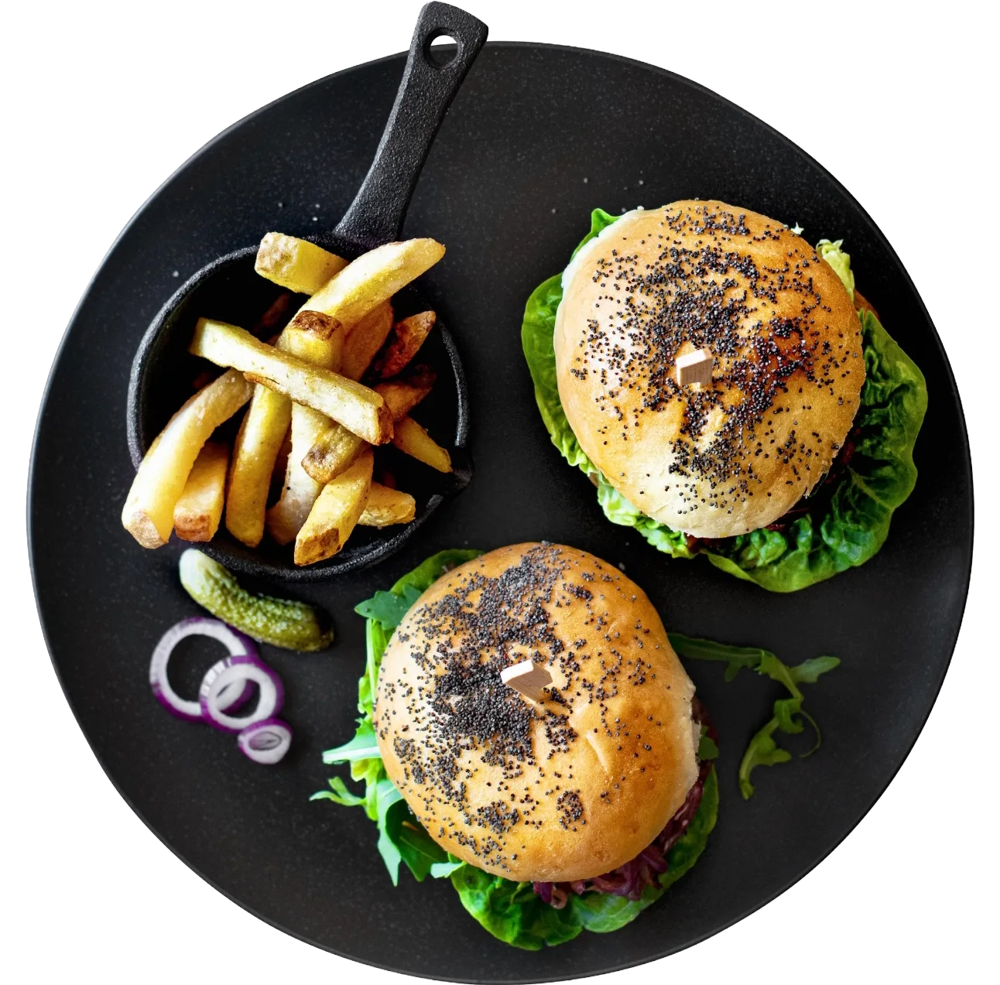
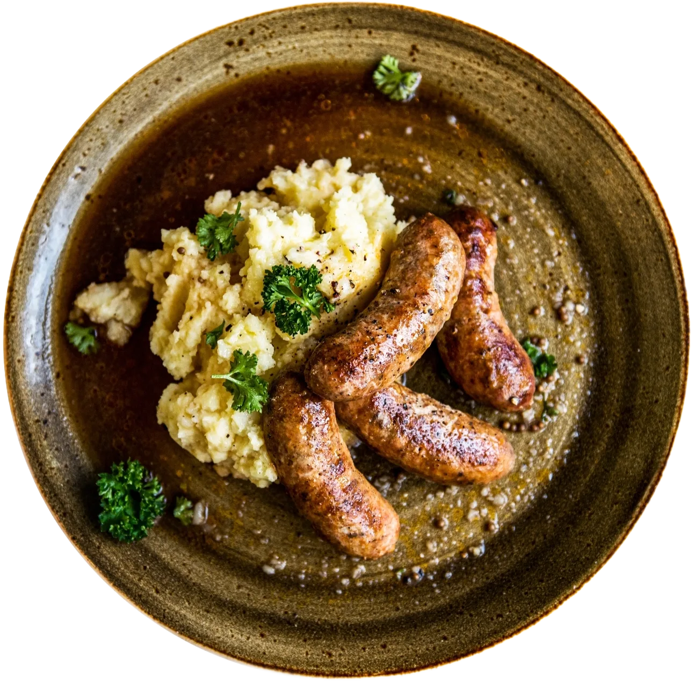
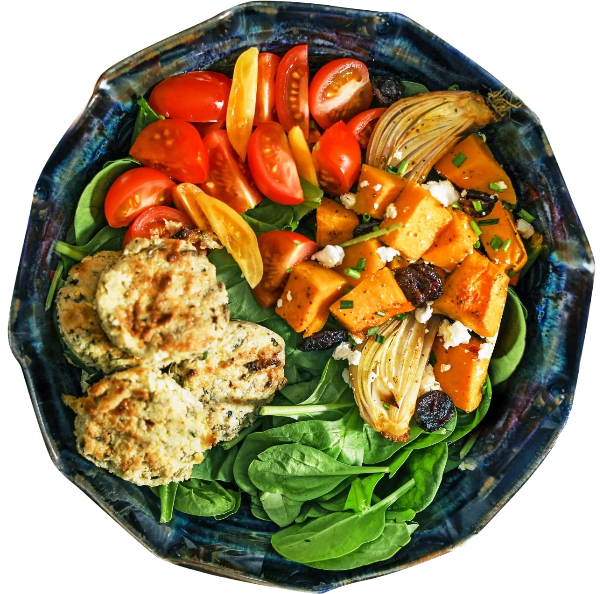
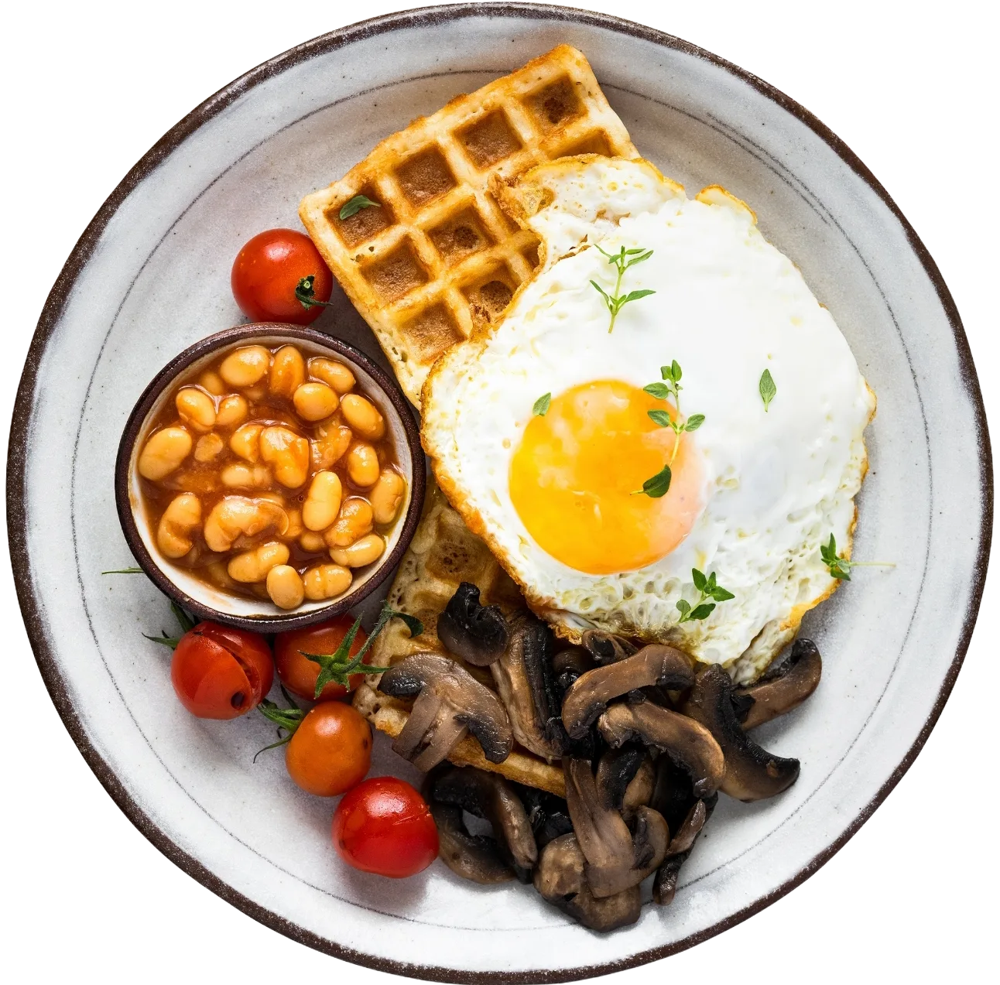
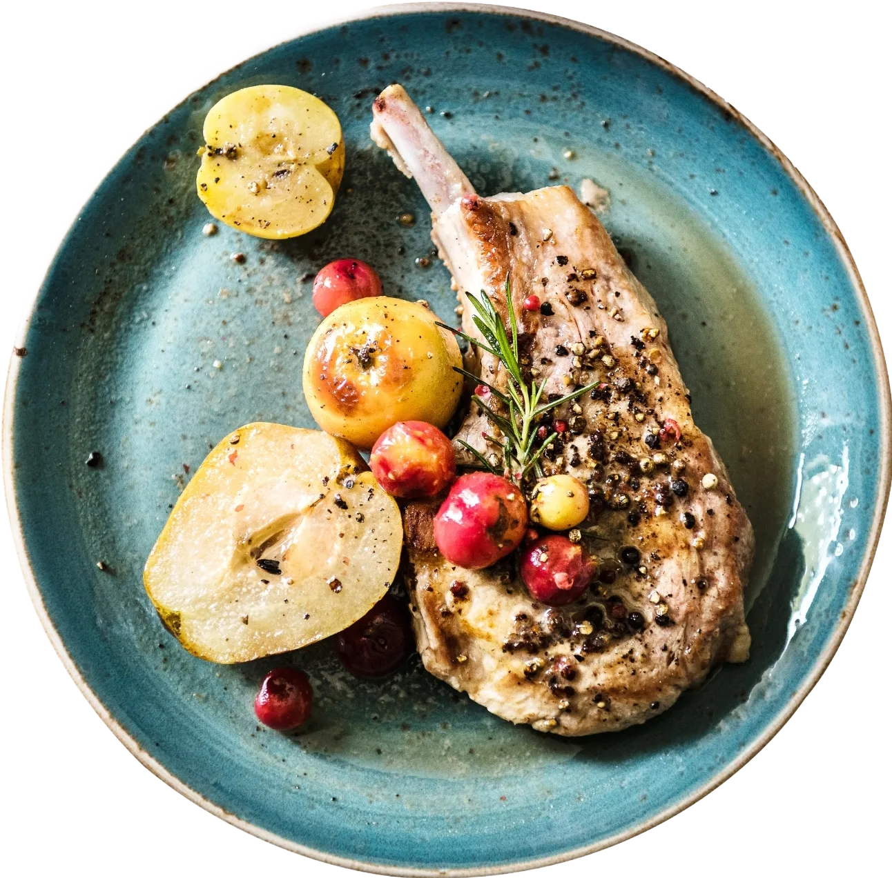
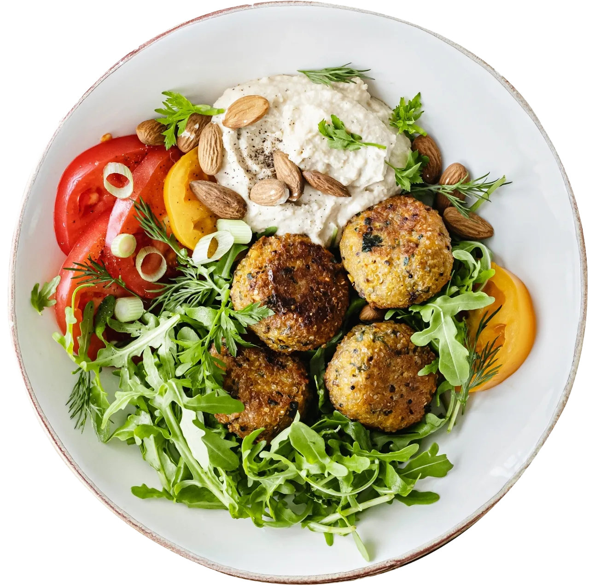

Životospráva
Měj přehled o své životosprávě, jez, kdy to vyhovuje tvému tělu, a odpočívej efektivně i aktivně.
Gastro aplikace nové generace
viginis ti pomůže s výběrem, plánováním i sdílením jídla. Vyfoť si pokrm a aplikace ti během chvilky ukáže recept, suroviny i to, kde je nejblíž koupíš.
Co všechno zvládne
Měj přehled o své životosprávě, jez, kdy to vyhovuje tvému tělu, a odpočívej efektivně i aktivně.
Ukaž blízkým, co jíš, pochlub se úspěchy a vyjádři svůj názor.
Naplánuj dopředu, kde, kdy a s kým budeš jíst — na vše potřebné včas upozorníme.
Zapomeň na běhání po nákupech — připravíme ti seznam a objednáme jídlo až domů.
Rezervujeme místo v restauraci, rozešleme pozvánky přátelům a doporučíme nejlepší jídlo.
Pomůžeme ti dodržovat pravidelnou stravu a poradíme, jak zlepšit stravovací návyky.
Chuťovky z komunity
Talíře, které lidé ve viginis sdílejí každý den — od lehkých salátů po víkendové speciality.






Jak to funguje
Vyfoť, sdílej, objevuj, najdi i zažívej — přepni si to, co tě zrovna zajímá.


Vyfoť jídlo do viginis a aplikace ti ukáže recept, suroviny i to, kde je nejblíž koupíš.
Vyfoť jídlo do viginis a sdílej ho s přáteli — komunita, která tvému talíři rozumí.
Recepty, restaurace, tematické kanály, eventy i workshopy — vše kolem gastronomie na jednom místě.
Přehledná mapa "Kde jíme?" ti ukáže, kde lidé z viginis zrovna jedí — vybereš si podnik podle fotek jídla, ne jen podle hvězdiček.
Jdi do viginis, pozvi kamarády a uvař trendy jídlo — appka pomůže od pozvánky po recept.
Pro firmy
viginis propojuje jedlíky s odborníky a podniky, kteří jim dokážou pomoct.
Rada od odborníka přímo v appce.
Oslov masy lidí podle svých plánů.
Zůstaň s klientem v kontaktu na dálku.
Propojíme tvůj systém, nebo menu uděláme spolu.
Reference strávníků na jednom místě.
Propojíme tvůj rezervační systém s viginis.
Podle GPS tě najdou hladoví jedlíci nablízku.
Všechna menu na jednom přehledném místě.
Objednávka surovin, hotových jídel i krabičkové diety.
Nejlepší referencí je reálný úspěch v praxi.
Kupony a věrnostní program pro tvůj podnik.
iOS: appka je ke stažení v App Store. Android: usilovně pracujeme, dáme vědět přímo zde.
Stáhnout v App StoreKdo jsme
Jsme firma viginis s.r.o., která vyvíjí výjimečný produkt zaměřený na gastronomii a služby s ní spojené.
Chceme, aby se s vámi rodina a přátelé mohli setkávat a společně si vychutnávat oblíbené pokrmy — a aby vás aplikace při tom hýčkala a převzala část starostí.